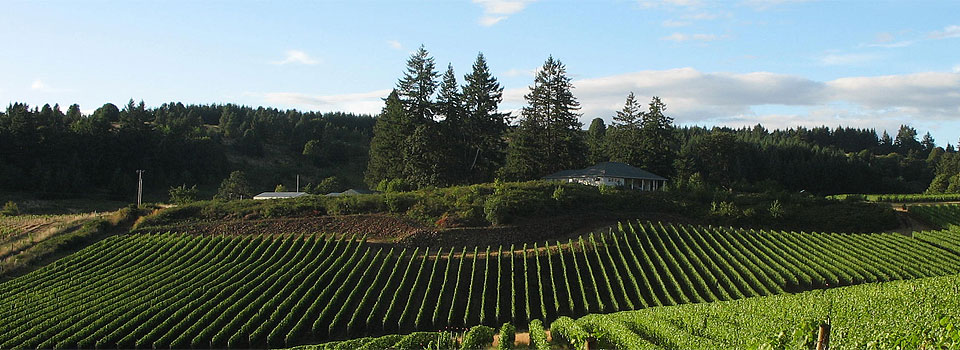
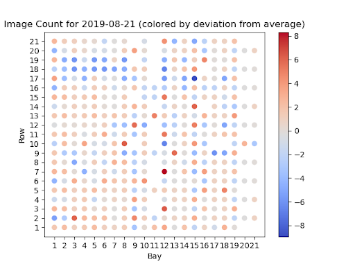
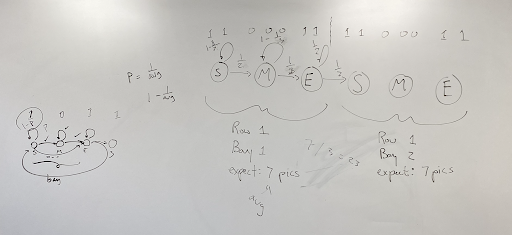
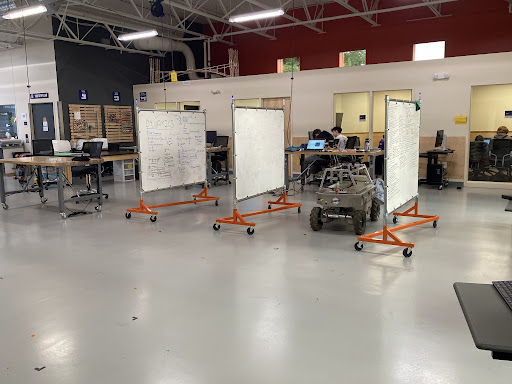
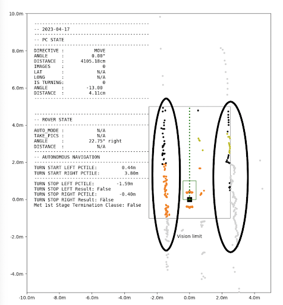
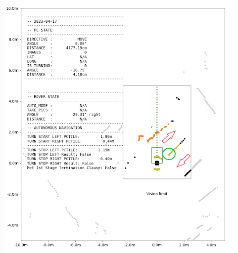
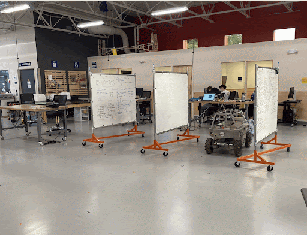

Hi, I'm Sam
I am a people-oriented software engineer with a strong focus on building positive relationships and leveraging unique talents to drive team success. I love programming, swimming, history, and hiking. This site represents a selection of my personal and professional accomplishments. If you have any questions or just want to connect, you can reach me via LinkedIn or through samuelimlig@gmail.com.
REAL WORLD EXPERIENCE
Senior Capstone Project - VineTech: 2022-2023
The VineTech project has has existed since 2016 and its goal is to utilize a series of machine learning
algorithms to accurately predict the yield of The Crawford Beck Vineyard
several weeks or months before harvest. This is important for vineyard owners, because without an accurate prediction
of yield, hundreds of pounds of grapes would be wasted. Last year, Crawford Beck reported their estimate to be 72% accurate,
while the VineTech estimate had an estimate of 98% accuracy.
Crawford Beck Vineyard

Previous teams were forced to manually take pictures of the vineyard rows using GoPros, but during the project's development an autonomous rover was created to take the images.


Goals
When our team took over the project, we had three major goals to accomplish: fix the inaccurate bay assignments in the database in order to increase our predictions, implement adaptive cruise control so that the rover would maintain a constant speed regardless of topography and implement autonomous turning, so that the rover could navigate itself autonomously through the vineyard, instead of just a singular row.
Goal 1: Fix the inaccurate bay assignments
Our specific vineyard was separated into 21 rows, each with 21 bays. Bays are separated from one another by a metal post. The first image is an example of such a metal post from the rover's view. The middle image is an example of our spreadsheet detailing the weights collected during harvest. After each harvest, the spreadsheet is taken and the weights recorded are associated with the images from that specific bay. This allows us to start making predictions based upon previously recorded images and weights. When these images are incorrectly labeled, it makes the predictions remarkably less accurate. The harvest season is typically in the early fall/late summer timeframe, which means we are taking most of our vineyard images in the summer, during higher temperatures. Unfortunately, the official max operating temperature of our GoPro GPS modules are approximately 95 degrees Fahrenheit, so there are times when we exceed that temperature while taking photos and our GPS meta data becomes inaccurate as a result.
The two images shown here are some example plots from our validation scripts. These images are showing the GPS data recorded by each image with latitude on the x-axis, and the longitude running along the y-axis. The first image depicts a day in early June, where the GPS data is fairly accurate. The last image depicts a day in late August with a much higher temperature. This increase in temperature resulted in what we called “GPS drift”, which gave us incredibly inaccurate coordinates.

Image Count Per Bay
In addition to our GPS visuals, we also created some visuals that would show us a plot of our image count distribution. Each point is colored by the number of images in that bay, and how much that number deviates from the average images per bay. The range for this day is +8 over to -8 under. What this allows us to do is quickly glance at each day and determine the accuracy of how well we determined the row and bay numbers.
As a result of these data visuals, we determined that we needed a new way of assigning the row and bay numbers for each image. To do this we used a "post tagger". Our "post tagger" is a machine learning algorithm that (given some good test-data) is able to determine if a metal posts is in the image. This is used in conjunction with the timestamp data from each image to map an image to a particular bay. After doing this, we achieved an approximate accuracy of 96%. This 4% of error can be for a variety of reasons, but the most likely is that it saw a post for another bay through the vines as shown on the last image.

Hidden-Markov Model
To address the accuracy issues with the “post-tagger”, we developed a Hidden-Markov Model that given the output of our post prediction model, is able to perform some pattern matching to determine if there was a false negative or a false positive. This is done by providing the model with a “typical pattern”, which can be mathematically determined based upon the total number of images for that given day. This was incredibly successful and allowed us to correct the 2019 and 2020 datasets, and with a little bit of work, next years team should be able to quickly implement this for 2021, 2022, and by that point 2023 data as well. Additional work is necessary because the rover images are formatted differently, so the image timestamps and other metadata from the new image structure will need to be determined.
Goal 2: Implement Adaptive Cruise Control
By comparing the current number of wheel rotations against an ideal number of wheel rotations in a given amount of time, we could decipher how we need to modify our speed in order to meet our ideal speed. This was achieved by using the rover's motor encoders, but we quickly that the encoders provided inconsistent readings depending on the speed. At slower speeds, it was completely accurate, but upon speeding up, the motor encoders would become inconsistent. With these inconsistent readings, it became impossible to utilize the motor encoders to solve this solution. This knowledge caused us to shift our solution to incorporate the rover's GPS. This process worked similarly to how the motor encoders calculated speed, but instead of utilizing wheel rotations, we utilized previous and current GPS coordinates.
Goal 3: Implement Autonomous Turning
Because we do not have a vineyard at George Fox University, we set up partitions in the Maker Hub to simulate vineyard rows. In this image, the rover autonomously navigated itself to the end of the simulated row and simply stopped when it could no longer see any rows on either side of it.

This is how the rover views the LiDAR data. The box in the middle is the rover and the clusters on either side are the rows. The rover determines these clusters by using a machine learning algorithm called a Gaussian Mixture Model, which takes the amount of clusters to look for and then automatically deciphers the best clusters from the data provided. Using this method, the rover can decipher where the majority of points lie in relation to itself, which is useful for deciding when to turn.

Once the majority of points are behind the rover, that means it has reached the end of a row. It then algorithmically determines a pivot point, which will be the end of the row for whichever side the rover is turning towards. In this example, that pivot point is the green circle that represents the end of the right row.

During a turn, the rover utilizes the pivot to adjust its angle based upon its distance from that point. After both rows are once again visible, the rover ceases to turn and continues to intelligently navigates itself down the row.

In this successful turn, we can see the rover reach the end of a row, pick its pivot, adjust its turning angle based upon that pivot and, once it can perceive both sides of a row again, continue intelligently navigating forward to its next goal.
Columbus Systems - Software Developement Intern: 2022-2023
I developed a mobile application for iOS and Android titled 1075 Mobile using the Delphi programming language. This application enables propane drivers to view customer, tank, and appliance information by using the REST paradigm to interact with a Paradox database. Additionally, it allows for transactions, safety checks and GPS routing to be performed in the field. This allows the employees to utilize their phones to perform their tasks, instead of having to utilize onboard laptops or pen and paper. Besides development, I was responsible for communicating with employees about desired features and support. Another aspect of my role was publishing the application to both the Amazon and Apple App Stores. This process included icon design, supplying example images, writing a privacy policy and verifying that the application met every appstore criteria.

(In the interest of security, these are the only images I can sample)
George Fox University - Lab Assistant: 2021-2023
I assisted and encouragec students to reach their academic goals by teaching them core Computer Science concepts and empathizing with them when they fall short of those goals. Key concepts conveyed are data structures, analysis of algorithms, parallel programming paradigms, relational databases, front-end design, and programming style best practices.
Servant Engineering - Lesvos: 2021-2022
Hoping to assist with the refugee crisis on the beautiful Mediterranean island of Lesvos, my inter-discipline team brainstormed ways that we could bring sustainable income to the island. After months of researching a variety of factors, such as likelihood of cultural acceptance, cost, and environmental impact, we discovered the blue-green algae Spirulina. Spirulina is a resource deeply ingrained within the culture and a procurer of countless health benefits. I was responsible for deciphering the logistics of the farming process, such as the growing conditions, cultivation, production, harvesting and cost, as well as for the post-processing methodology for a mid-sized facility. The project culminated in several members of our team traveling to Lesvos and displaying our work to interested Lesvos residents. The presentation was a resounding success, as the project was given authorization to proceed with the designing and constructing of a Spirulina facility on the island. A copy of the PDF presentation can be found at this link.
UNIVERSITY PROJECTS
TypeScript Research Paper - Structures of Programming Languages: Fall 2022
Tasked with exploring the history, syntactic and semantic structure of a programming language, I chose the language TypeScript. This language was developed by Microsoft and has seen significant use and support since its inception, primarily because of its sustainability and scalability compared to vanilla JavaScript. The full report can be accessed via this link.
Movie Database - Database Systems: Fall 2022
Our team was tasked with creating and designing a PostgreSQL database to hold information about movies, remakes, rewards, studios, actors, producers, directors, authors, writers and many more. We procured the information by using the Python library BeautifulSoup to scrape the information from a series of HTML files on the internet. After correctly extracting the data, we inserted it into our database and were given a total of 23 queries to answer. These queries ranged in difficulty, such as simple select statements from entities, to the use of recursion across a multitude of tables. The full report for the project can be acccessed via this link.
Pandemic 2020 - Software Engineering: Spring 2020
Seeking a high-level solution to the global pandemic, my team and I developed the idea for a mobile application dubbed Pandemic 2020. Pandemic 2020's purpose would be to reduce the spread of COVID-19 by developing an early warning system through the use of contact tracing, daily checkups and regulation notifications. In this document, we discuss the intended audience, use, risks, and dependencies required for this application to exist, as well as the basic UI elements. The culmination of the project was a presentation before a mock board of directors comprised mainly of university faculty. The final PDF can be found at this link.